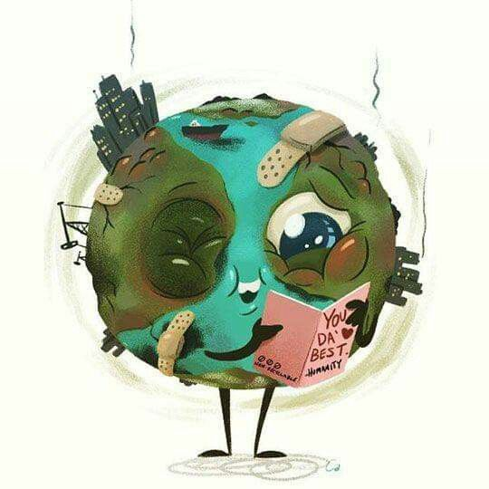
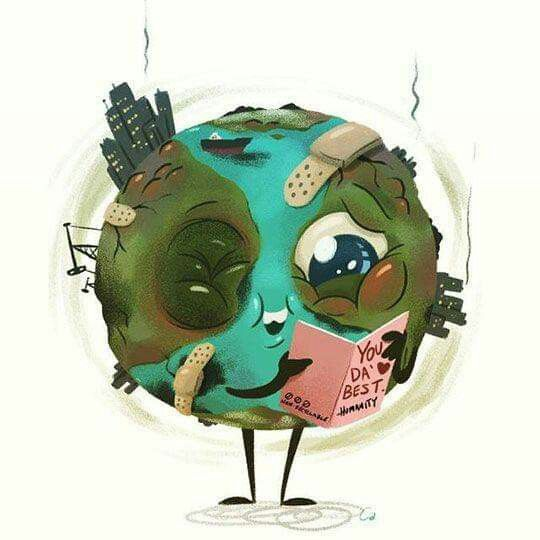
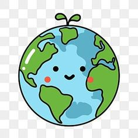
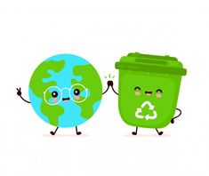
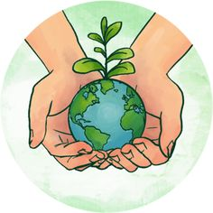

Cuida el planeta
El cuidado del medio ambiente no es una opción, es una necesidad para garantizar un futuro sostenible para las próximas generaciones

El cuidado del medio ambiente no es una opción, es una necesidad para garantizar un futuro sostenible para las próximas generaciones
Cuidar el medio ambiente es esencial para preservar nuestro planeta. Aquí tienes algunas maneras de hacerlo:
Sin embargo, el crecimiento de la población y el desarrollo industrial han ejercido una presión cada vez mayor sobre los recursos naturales, dando lugar a la sobreexplotación ambiental y al cambio climático.
El cuidado del medio ambiente se refiere a la protección y preservación de estos recursos para garantizar un futuro sostenible para las generaciones venideras. Esto implica adoptar prácticas responsables en nuestras actividades diarias, desde la gestión adecuada de los residuos hasta la conservación de la biodiversidad y la promoción de fuentes de energía limpia.
Exploraremos la importancia del medio ambiente, los desafíos que enfrenta y las acciones que podemos tomar para protegerlo y restaurarlo. Al comprender la interconexión entre los seres humanos y el medio ambiente, podemos trabajar juntos para construir un futuro más saludable y equilibrado para todos.
